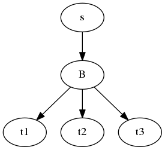

A module for generic coroutines.
This is a decorator used to start a coroutine.
coroutine |
Example Use:
@coroutine
def printer(target):
while True:
output = (yield)
print output
target.send(output)
@coroutine
def sink(filename):
out_file = open(filename, 'w')
while True:
output = (yield)
out_file.write(output)
s = sink("test.txt")
p = printer(s)
for line in output:
p.send(line)
A coroutine to send the same input to multiple targets.
Example Use:
s1 = sink('out_1.txt')
s2 = processor('out_2.csv')
b = broadcast((s1, s2))
p = printer(b)
for line in source:
p.send(line)
broadcast |
This coroutine reads in a number of inputs before joining them with a comma and sending the string down the pipeline.
comma_join |
Although not evident from the graph, since this is a couroutine I assume that the processors are always called in the same order if the output needs it.
output |
The output does not take a co-routine as an argument so it has to act as a sink.
Takes a stream of input strings and appends strings sent to it to each string (acting like a zip between a generator and an input stream).
comma_append |
The file_output acts much like the output co-routine but assumes that the target is a disk-file and will create it if passed a string instead of an open file.